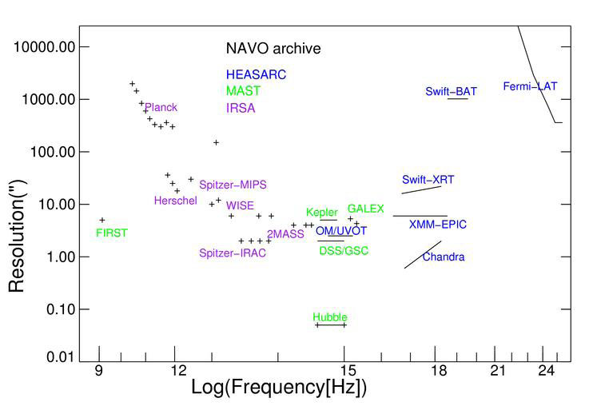

The detailed holdings for each mission stored in the NAVO archives are given in our resources table. Here we describe the general categories of data available and how you might get to them. What can you find?
| 
This figure illustrates the diversity of a few of the major datasets held by NASA. |
For most missions, the mission data is divided in temporally bounded observations. Details vary from mission to mission, but there are typically a time range, exposure, position, target, investigator, and instrument configuration associated with the observation. You can get Observation tables which provide a summary of the mission. These allow you to see if there is coverage regions and/or times of interest with the instrument characteristics you are interested in. If you really just looking to seeing if there is spatial coverage then the simple cone search protocol is all you need. Otherwise you may wish to do more sophisticated queries using the general table access protocol (TAP).
For many missions a major data product is an object catalog (or catalogs) derived from systematic analysis of the observations. The astronomer can often use the information in these catalogs without needing to reference the observations directly. Such catalogs are typical in imaging missions with reasonably high resolution. Object tables may include both observational constraints and measured values. Some missions may have multiple object catalogs reflecting difference aspects of the mission. As with the observation catalogs you can query these with either cone or TAP queries depending upon whether you need just a spatial match or have more complex search criteria.
All of the archives provide interfaces that allow users to retrieve observation images. These are the actual images associated with specific observations but may only be available for higher levels of processing. For some missions, the basic images are not taken as discrete observations but are generated in post processing. These interfaces are are currently queryable using version 1 of the simple image access protocol which supports positional queries. Upgrades to version 2 which will support more complex criteria are scheduled for the coming years.
MAST provides a spectral interface to access spectral data for spectrometer based missions and for the HST spectrometer instruments. This uses the simple spectral interface document and supports queries by position, wavelength and several other criteria. Spectral interfaces are planned at IRSA and NED.
MAST, IRSA, and the HEASARC provide many image services for specific regions of the sky or associated with specific objects. Certain regions of the sky have many specialized services associated with them. They typically do not provide access to the full mission dataset but are often more highly processed.
Other images services are direct cut-out capabilities where the user can specify a particular region of the interest and will get results of that area is in the mission coverage region. IRSA provides a standard cutout service for its imaging missions. MAST provides cutouts for several key datasets. At the HEASARC, the SkyView service provides cutout capabilities for over 100 sky datasets. NED's imaging service provides a combination of cutouts and observations associated with specific objects.
Each of the resources described above is indexed in a common registry of resources maintained at MAST. Users can search this metadata directly using the Directory service. This is used by many VO-enabled tools but users may sometimes find it useful to explore the detailed metadata associated with tables and other services.